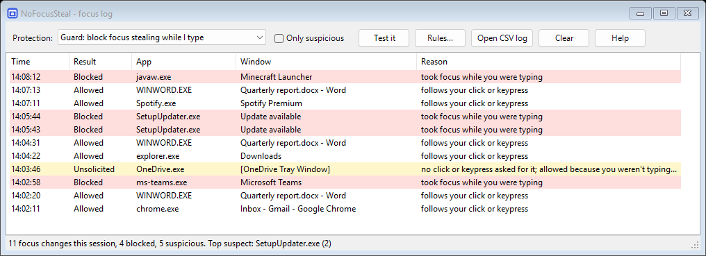

You're mid-sentence and a popup jumps in front, so your keystrokes land in the wrong window. NoFocusSteal puts focus straight back where you were typing, flashes the pushy app's taskbar button instead, and tells you exactly which app it was.
A small tray app that stays out of your way until something tries to jump in front of you.
If another app grabs focus while you're typing, focus returns to your window within a few dozen milliseconds. Your keystrokes stay where they belong.
Every focus change is logged with the app, window, process ID and exe path, including invisible windows. Leave it running and check Top suspect.
Clicks, Alt+Tab, Win-key shortcuts, dialogs, the Start menu and closing windows all behave normally. It only steps in when nothing you did asked for the switch.
No DLL injection and no API hooking of other programs. It uses the same public Win32 calls any app can use, all from its own process.
Right-click an app in the log to always allow it, or to block it even when you aren't typing.
It keeps the time of each keypress, never the key. It has no network code. The log is a local CSV file.
Red rows were blocked. Yellow rows were focus changes nobody asked for; that's where mystery "my window keeps losing focus" culprits turn up.

NoFocusSteal watches foreground changes and the timing of your keyboard and mouse input, then asks one question: did you ask for this?
| Situation | Result |
|---|---|
| You clicked, used Alt+Tab, Win, Enter, Esc or a shortcut, and haven't typed since | Allowed |
| The window you were in was closed, minimized or hidden | Allowed |
| Same app: a dialog, a new tab or a new window | Allowed |
| Start menu, search, Alt+Tab switcher, lock screen, UAC | Allowed |
| X-Mouse is on and you just pointed at the window | Allowed |
| Another app grabs focus within 1.5 s of your last keypress | Blocked: focus comes back, the app's button flashes |
| Another app grabs focus right after you clicked inside your window, and it has grabbed focus before | Blocked |
| An app grabs focus while you're idle, for the first time | Logged as unsolicited (blocked in Strict mode) |
| The same app does it again within 10 minutes | Blocked, even while you're idle |
Fake keypresses generated by software (the classic trick focus stealers use to get past Windows' own protection) are ignored, so apps can't sneak through.
The exe isn't code-signed yet, so SmartScreen may warn you. Click More info → Run anyway, or build it yourself. Releases are built by GitHub Actions from the public source and come with a SHA-256 checksum.
Run NoFocusSteal (Log only mode is enough) and carry on working. When it happens, look for yellow or red rows. Top suspect in the status bar names the worst offender, and right-click → Open file location shows the exact exe. Common culprits include updaters, chat apps, OEM helper utilities and background tasks that briefly open invisible windows.
Yes. While you're pressing keys, popups can't pull you out. For games you play mostly with the mouse, switch to Strict mode.
That's a Windows bug: an invisible input-method window owned by explorer.exe takes focus for a moment after each click. NoFocusSteal can't prevent it, because Windows usually hands focus back before NoFocusSteal can act. It does identify the bug in its log, so you know it's Windows and not another app. See the Microsoft Q&A thread for the workarounds people have tried.
X-Mouse makes the window under your pointer active, but a popup can still grab focus, and your typing lands in it until you move the mouse. It's also a common cause of "random" focus loss when it's switched on by accident (Settings → Accessibility → Mouse → "Activate a window by hovering over it"). NoFocusSteal works alongside it: windows you point at can take focus, and everything else is blocked.
Windows hides input sent to administrator apps (WizTree, Task Manager, installers) from normal apps, and doesn't let a normal app take focus back from one. So while an administrator app has focus, NoFocusSteal lets switches away from it through instead of guessing. Run NoFocusSteal as administrator to cover those apps too; the log tells you when this happens.
Windows stopped honouring it reliably years ago, and apps that steal focus deliberately bypass it. That's why this question has come up for over a decade.
Their input is generated by software, so NoFocusSteal ignores it by default. Add trustInjectedInput=true to %APPDATA%\NoFocusSteal\settings.ini.
It records when a key was pressed and whether it was typing or a shortcut, in memory only, never which key. There are no hooks, no injection and no network access. The source is short and public.
People have been asking for this since the Windows Vista days, and the answer kept being no:
"This is not possible without extensive manipulation of Windows internals and you need to get over it." — accepted answer on Super User, 2009